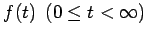
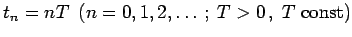
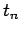
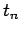
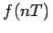

Inhalt Index DeskTop Bronstein

 Integraltransformationen Z-Transformation Eigenschaften der Z-Transformation
Integraltransformationen Z-Transformation Eigenschaften der Z-Transformation


Ist eine Funktion  nur für diskrete Argumente  bekannt, so setzt man f(nT) = fn und bildet die Folge  . Eine solche entsteht z.B. in der Elektrotechnik durch ,,Abtastung`` einer Funktion f(t) in den diskreten Zeitpunkten . Ihre Wiedergabe erfolgt dann häufig als Treppenfunktion (s. Abbildung).
. Eine solche entsteht z.B. in der Elektrotechnik durch ,,Abtastung`` einer Funktion f(t) in den diskreten Zeitpunkten . Ihre Wiedergabe erfolgt dann häufig als Treppenfunktion (s. Abbildung).
Die Folge {fn} und die nur für diskrete Argumente definierte Funktion , die als diskrete Funktion bezeichnet wird, sind äquivalent. Für die Folge {fn} wird keine Konvergenz für  gefordert.
gefordert.